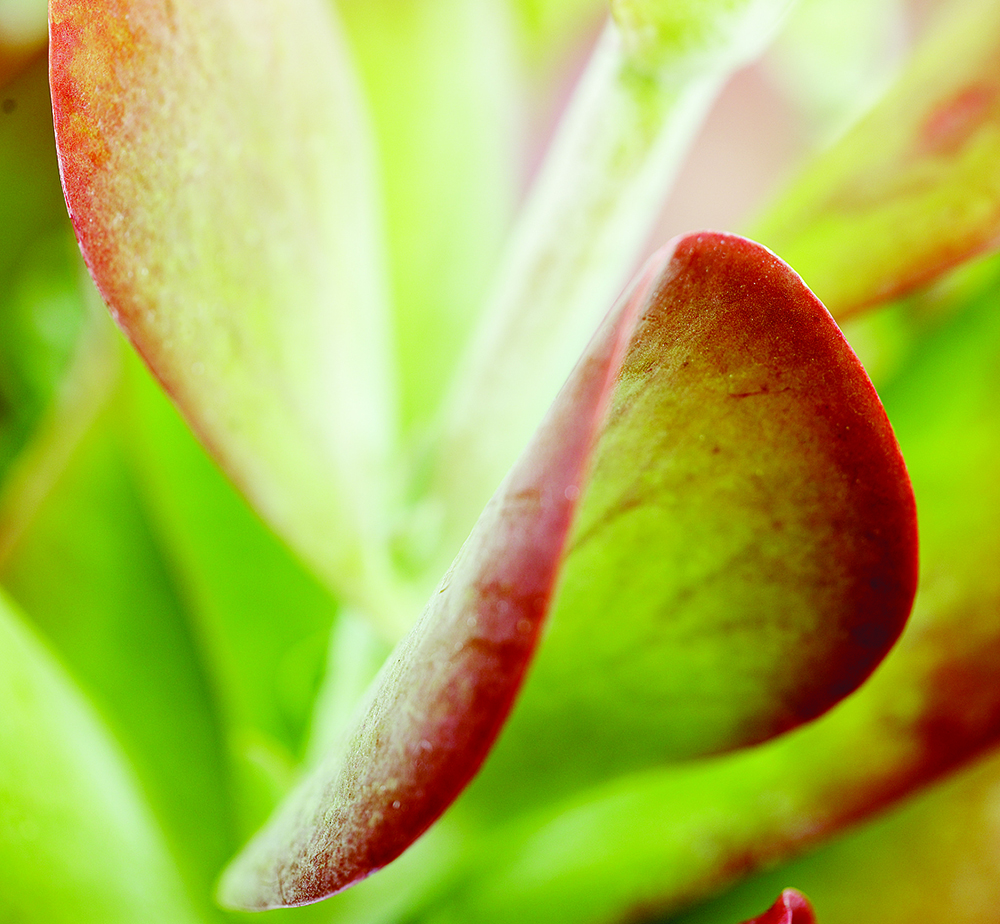
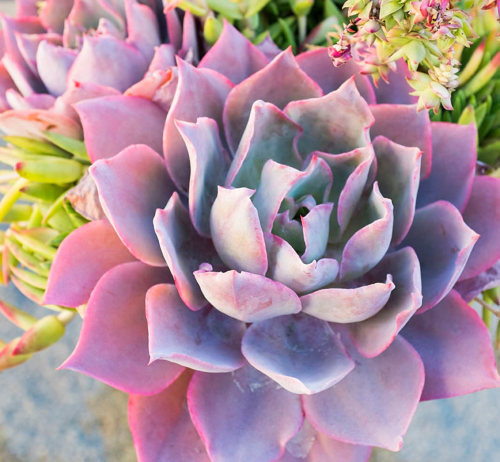
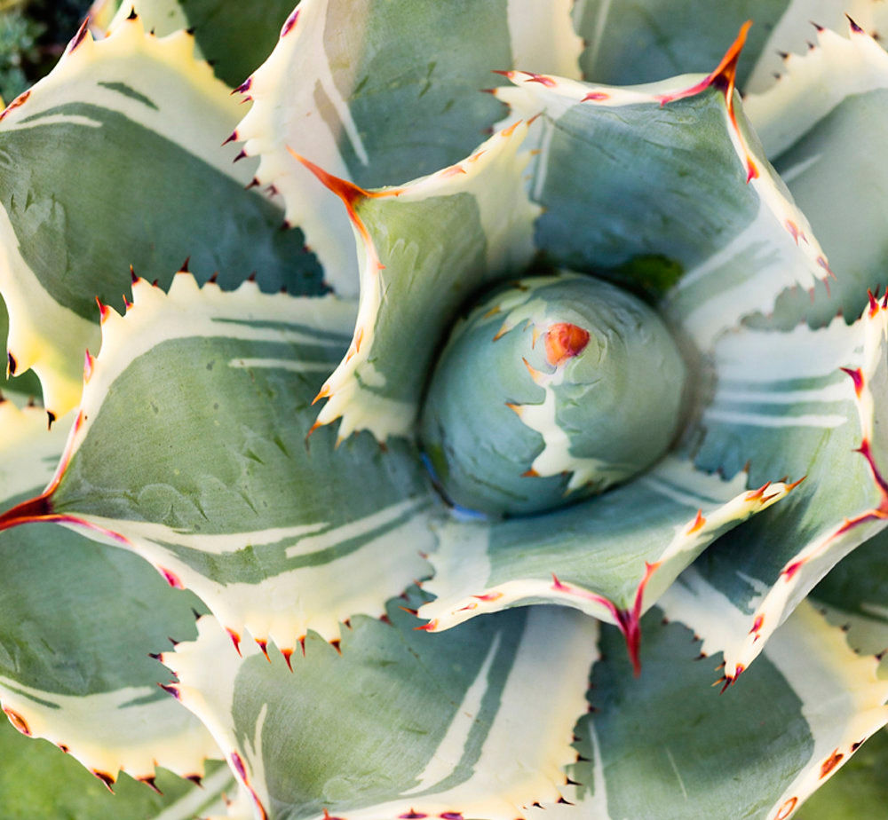
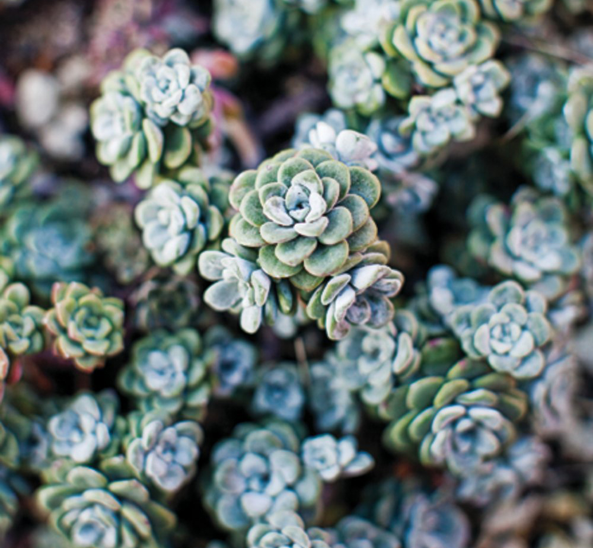
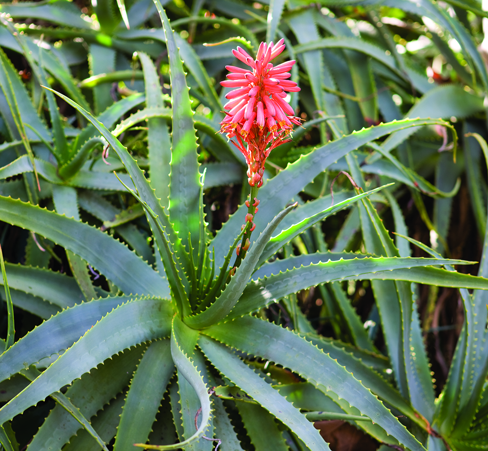
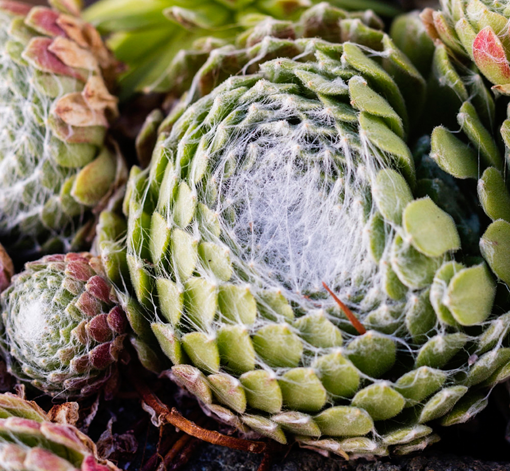

Genus of Succulents
Check out the slideshow to learn about popular types of succulents by genus.
-

KALANCHOE
Family: Crassulaceae
Environment: Kalanchoe are easy to care for and require limited watering. They do best in full sun or light shade. They are quite easy to breed.
Fun Fact: Kalanchoe was one of the first plants to be sent into space. The Soviet Union sent them on a resupply of space station Salyut 1 in 1971. -

ECHEVERIA
Family: Crassulaceae
Environment: Echeveria grow well in containers and garden beds, and do best in cooler environments with some mild heat.
Fun Fact: Echeveria come in a rainbow of different colors. Some varieties include ‘Afterglow,’
‘Blue Curls,’ ‘Perle von Nurnberg,’ and ‘Black Prince.’ -

AGAVE
Family: Asparagaceae
Environment: Agave grow best in direct sunlight. They are very resistant to most weather conditions, including frost and heat.
Fun Fact: Blue agave is used to make tequila. -

SEDUM
Family: Crassulaceae
Environment: Sedum grow well in tight places, like between rocks or containers. They are hardy plants, tolerant of high heat, bad soil, and droughts.
Fun Fact: Sedum come in many different shapes, colors, and sizes. -

ALOE
Family: Asphodelaceae
Environment: Aloe must be planted in well-draining soil. If planted in a container, aloe vera must be put in a well-draining pot. It thrives best in indirect sunlight.
Fun Fact: Aloe vera, considered the “true aloe,” is often used in pharmaceuticals. -

SEMPERVIVUM
Family: Crassulaceae
Environment: Sempervivum do well in cold and wind compared to other succulents. However, they do not thrive well in wet soil. They do best when placed in between rocks.
Fun Fact: Sempervivum means “always living” in Latin.